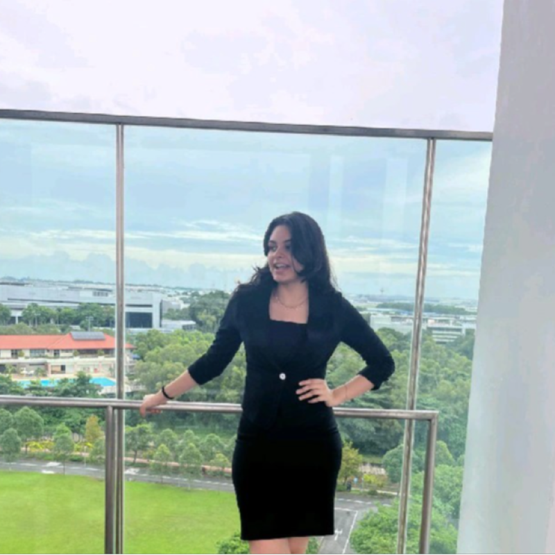
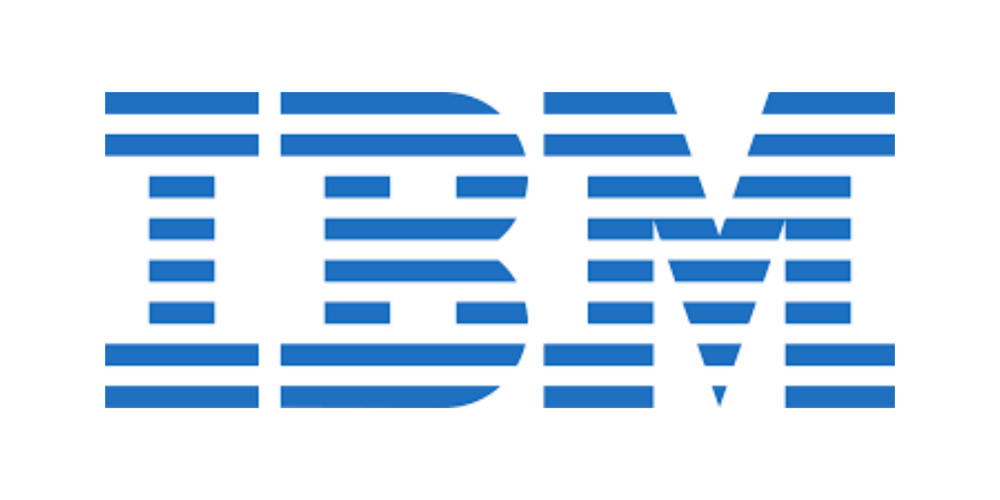
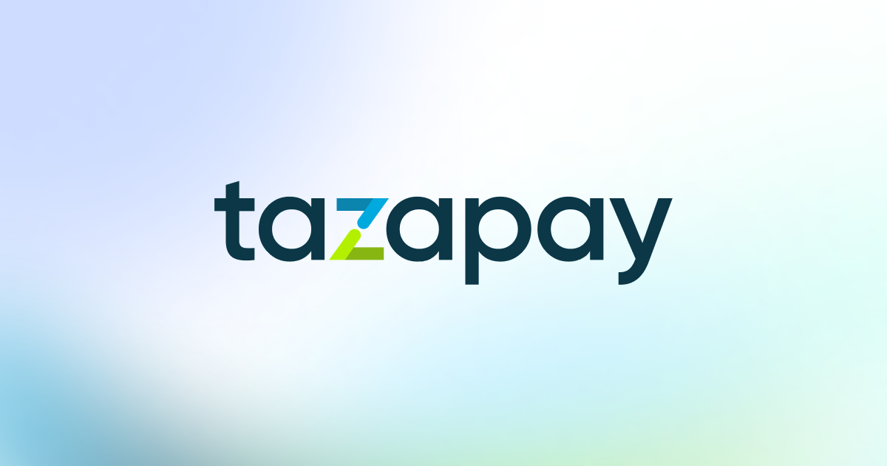
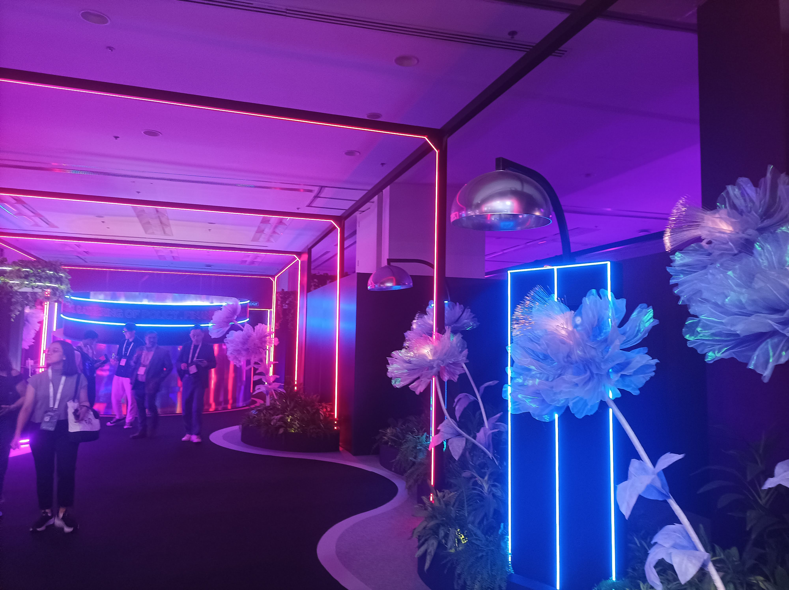

Certifications across AI, data, Power BI, and business technology
Technology Consulting | AI Strategy | Financial Analytics
Manya Mehra
SUTD Engineering Systems and Design undergraduate focused on AI strategy, financial analytics, and digital transformation. Passionate about translating data, emerging technologies, and business insights into practical real-world impact.
Capability Network
Where my work connects across AI strategy, business intelligence, analytics, and growth.
Focus
AI Strategy x BI x Financial Analytics
CGPA
4.16 / 5.00
Core Stack
Strategy + Dashboards + Transformation
Minor in Design Artificial Intelligence
Growth, strategy, and banking analytics projects
Research papers and projects across behavioral science and AI analysis
About
Technology-minded analyst with range, momentum, and a bias for execution.

I operate at the intersection of AI strategy, business analysis, financial services analytics, and digital transformation. Across IBM, Tazapay, Tychr, SUTD research, and student leadership, I have built a profile that combines technical fluency with business judgment, stakeholder awareness, and strong execution.
My work spans LLM research, fintech market analysis, competitive benchmarking, analytics dashboards, AI-powered engagement systems, business reporting, student tools, outreach strategy, and large-scale event leadership. I am drawn to messy, real-world problems where data, people, technology, and strategy all have to come together.
Experience
Hands-on experience across AI strategy, fintech growth, consulting-style analysis, and business development.
May 2023 - Mar 2024
IBM

CTO's Office Intern
AI and LLM market research, competitive benchmarking, and enterprise technology strategy inside IBM's CTO Office.
IBM

CTO's Office Intern
AI and LLM market research, competitive benchmarking, and enterprise technology strategy inside IBM's CTO Office.
Worked inside IBM's CTO Office environment, conducting competitive benchmarking and market research on emerging AI and LLM technologies to evaluate enterprise applications, strategic positioning opportunities, and technology transformation initiatives.
Jul 2025 - Dec 2025
Tychr
AI Product Strategy Intern | Founder's Office
AI product strategy, business analysis, and growth positioning for an EdTech tutoring platform.
Tychr
AI Product Strategy Intern | Founder's Office
AI product strategy, business analysis, and growth positioning for an EdTech tutoring platform.
Supported business strategy and AI product development for an EdTech tutoring platform, translating market research, competitor benchmarking, and business analysis into growth and product positioning recommendations.
Sep 2025 - Dec 2025
Tazapay

Growth & Strategy Intern
Fintech growth analysis across market trends, engagement patterns, digital optimization, and reporting.
Tazapay

Growth & Strategy Intern
Fintech growth analysis across market trends, engagement patterns, digital optimization, and reporting.
Conducted fintech market and user engagement analysis to identify opportunities for digital transformation, product optimization, dashboard reporting, business process improvement, and technology-enabled growth.

GEO Programme
SUTD GEO
Global Exploration Opportunities Exchange | Surabaya, Indonesia
Applied machine learning and data analysis to a real-world production challenge in Surabaya.
SUTD GEO
Global Exploration Opportunities Exchange | Surabaya, Indonesia
Applied machine learning and data analysis to a real-world production challenge in Surabaya.
Worked on optimizing production time for Koperasi Sumber Mulia Barokah, applying machine learning and data analysis to messy real-world operational data, then translating insights into a practical business and operational model for local stakeholders.
Internship
IFAMA
Outreach & Growth Intern
Outreach, web data management, and growth strategy across 100+ agri-schools.
IFAMA
Outreach & Growth Intern
Outreach, web data management, and growth strategy across 100+ agri-schools.
Drove outreach to 100+ agri-schools, managed web data, and translated research into growth strategies for stronger engagement and institutional reach.
Teaching
Math Vision
Tutor
Concept-building support that made difficult math topics more structured and approachable.
Math Vision
Tutor
Concept-building support that made difficult math topics more structured and approachable.
Helped students build confidence and conceptual clarity by turning difficult math topics into structured, approachable learning sessions.
Research
Research work across LLMs, mental health datasets, and behavioral science analysis.
Jan 2025 - Sep 2025
SUTD UROP
Research Intern
LLM-based research using mental health datasets for AI-driven analysis and insight generation.
SUTD UROP
Research Intern
LLM-based research using mental health datasets for AI-driven analysis and insight generation.
Developed an AI-driven analytical project using mental health datasets, conducting research and evaluation to explore how LLMs can support insight generation, solution development, and technology applications in sensitive domains.
Apr 2021 - Sep 2022
University of North Carolina at Chapel Hill
Head of Research Interns
Behavioral science research coordination and analysis across a global student team.
University of North Carolina at Chapel Hill
Head of Research Interns
Behavioral science research coordination and analysis across a global student team.
Contributed to behavioral science data analysis across research projects and led research interns within a global student team, supporting execution, synthesis, and analytical quality.
Projects
Projects that turn data, AI, and product thinking into usable systems.
Industry Analytics Project
Credit Bureau Singapore | Project Lead | Jan 2026 - Apr 2026
Led analysis of real-world banking datasets to generate customer and business insights, designing a customizable analytics dashboard to support financial services decision-making.
AI-Driven User Engagement Tracking Platform
Jan 2025 - Apr 2025
Designed an AI-driven engagement and reward platform to improve participation, capture behavioral insights, and translate user activity into scalable product intelligence and process optimization.
Custom GPTs for SUTD Student Life
SUTD AI Interest Group
Built 15+ Custom GPTs for student life at SUTD, turning repeated campus and academic needs into accessible AI tools for peers and improving student engagement through practical automation.
Red Hat InstructLab
IBM AI Hackathon
Took part in an AI-focused hackathon centered on applied LLM workflows, rapid prototyping, model improvement, and product strategy under tight timelines.
NUS Maritime Hackathon
Maritime innovation
Worked on maritime innovation challenges that required fast problem framing, systems thinking, and technology-led solution design under time pressure.
SOAR Robotics Challenge
Organizer | Jul 2025 - Oct 2025
Supported planning and execution for one of SUTD's largest student-led robotics competitions, coordinating logistics, participant flow, and competition delivery.
Leadership
Leadership across university life, robotics, sustainability, culture, and student voice.
SUTD AI Interest Group
President | Jan 2025 - Mar 2026
Lead AI-focused programming for students through industry talks, practical workshops, peer learning, and student-facing AI tool initiatives.
ROOT Student Government
Director of Events | Jan 2025 - Feb 2026
Directed student-led event execution across logistics, stakeholder coordination, programming, and campus experience.
Building 0 Member
SUTD | 2024 - Present
Contribute to student-led campus and innovation initiatives, supporting the kind of hands-on community work that shapes SUTD's student experience.
Rotaract Club
Treasurer | SUTD | 2024 - Present
Provide treasury support for service-oriented student work, managing budgets, financial tracking, and resource allocation for club initiatives.
Freshmore VP
SUTD | 2024 - Present
Represent and support the freshmore student cohort, helping strengthen student voice, coordination, and community support.
Public Relations Secretary
Pathways World School
Represented student initiatives through school communications, outreach, visibility, and public-facing coordination.
Science Club President
Pathways World School
Drove science-focused student programming, encouraging curiosity, experimentation, and interdisciplinary participation.
MUN Organizer & Chair
Pathways World School
Organized and chaired MUN activities while building experience in diplomacy, public speaking, research, and debate leadership.
Earthwise
Founder | Pathways World School
Founded a student-led sustainability initiative focused on climate action, environmental awareness, and community participation.
Skills & Certifications
A strategy and analytics toolkit built across internships, research, and leadership.
Strategy & Business
Business Analysis
Market Research
Competitive Benchmarking
Product Strategy
Growth Strategy
Business Development
Stakeholder Engagement
Analytics & Visualization
Data and Business Analysis
Financial Analytics
Data Analysis & Visualization
Dashboard Management
Web Data Management
Power BI
Tableau
Excel
AI & Technical
AI Product Strategy
LLMs
Python
SQL
HTML
Cloud Basics
SEO
Vibe Coding
Leadership & Communication
Research Synthesis
Event Management
Public Speaking
Public Relations
Project Management
Certifications
- IBM AI Fundamentals
- IBM Data Fundamentals
- Microsoft Power BI & Data Analysis
- Harvard CS for Business
- IBM Spectrum Storage for AI & Big Data Fundamentals
- Essentials in Data Analysis by Microsoft
Awards & School Involvement
A long-running record of academic achievement and high-involvement student life.
Academic Awards
Honor Roll Award, Principal's Award, Outstanding Achievement in Digital Design, and Outstanding Achievement in Interdisciplinary Unit, reflecting consistent performance across academics and creative technical work.
MUN & Public Speaking
Attended 15+ MUNs with 8 awards, building a strong base in research, negotiation, policy framing, and persuasive communication.
Media, Writing & Culture
Tech Head for PAUSE Magazine, Content Editor for TOK Buzz, and writer for Meeting Midway, plus Head of Culture responsibilities at Pathways across cultural programming, school spirit, and student engagement.
Service & Activities
IGCA Silver, Climate Action, IAYP, and Shelter Protege Orphanage volunteering, combining service, initiative, and community-facing responsibility.
Recommendations
What mentors and managers have said about my work.
Manya stood out during her internship at Tazapay for her ability to quickly understand complex fintech workflows and translate them into clear, accurate content. She brings sharp analytical thinking, thoughtful questions, and smooth cross-team collaboration to every project. Her contributions to our payout pages, VA pages, award submissions, and event initiatives were consistently impressive. Manya is curious, proactive, and highly capable. I'm confident she'll excel in any fintech role.
Manya is a very hardworking, responsible young person! I had the privilege of interacting with her in 2021 and she assisted me in two of my research projects. She is diligent, attentive to detail, and has a positive, go-getter attitude. Her desire to learn and grow sets her apart from others in her cohort. I wish her the very best as she continues her academic journey!
Completed a mentorship under Geeta Gurnani's guidance at IBM, contributing to market research projects and Watsonx-focused work. The letter highlights her research into partnership programs, Watsonx, LLMs, security, and practical industry applications, as well as her inquisitiveness, proactivity, swift learning, strong aptitude, and exceptional interpersonal and communication skills.
Photos
Field notes from AI, research, fintech, leadership, and exchange work.

Industry Exposure
Singapore FinTech Festival
Exploring fintech ecosystems, payments, and digital transformation in a high-energy industry setting.Contact
Let's build something at the intersection of AI, analytics, and real-world impact.
I am open to opportunities across technology consulting, AI product strategy, financial services analytics, business intelligence, and growth-focused roles.